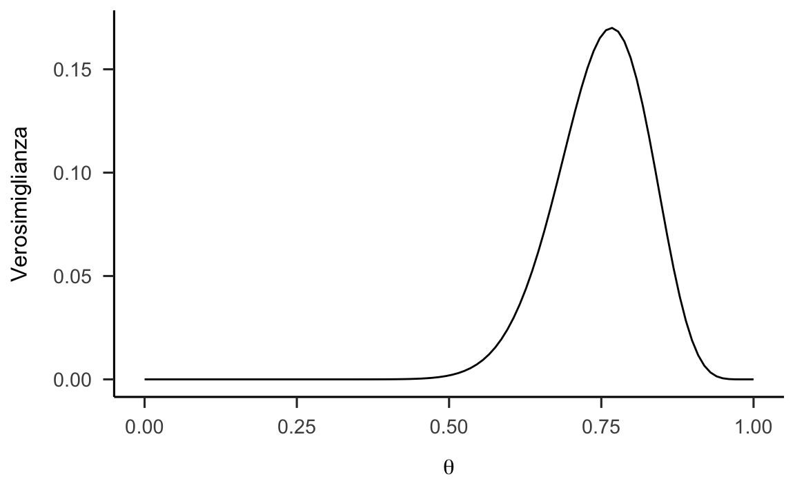
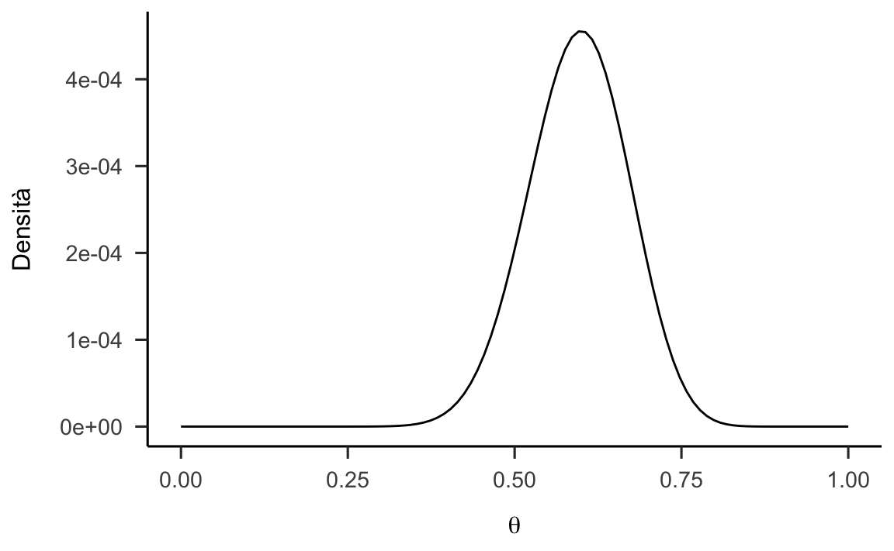
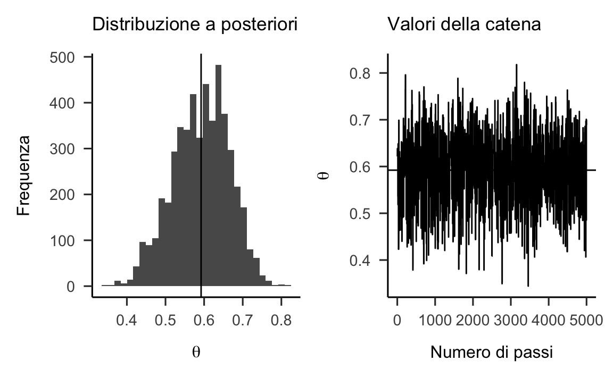

Capitolo 13 Stima della funzione a posteriori
Quando usiamo il teorema di Bayes per calcolare la distribuzione a posteriori del parametro di un modello statistico, al denominatore troviamo un integrale. Tale integrale, nella maggior parte dei casi, non si può risolvere per via analitica. L’inferenza bayesiana si sviluppa dunque mediante una stima numerica della funzione a posteriori. Dato che questi metodi sono “computazionalmente intensivi,” possono solo essere svolti mediante software. In anni recenti i metodi Bayesiani di analisi dei dati sono diventati sempre più popolari proprio perché la potenza di calcolo necessaria per svolgere tali calcoli è ora alla portata di tutti. Questo non era vero solo pochi decenni fa. Per capire come la distribuzione a posteriori possa essere approssimata per via numerica esamineremo qui tre diverse tecniche che possono essere utilizzate a questo scopo:
i metodi numerici convenzionali,
il metodo dell’approssimazione quadratica,
i metodi Monte Carlo basati su Catena di Markov (MCMC).
13.1 Metodi numerici convenzionali
È possibile stimare l’intera distribuzione a posteriori mediante metodi numerici convenzionali. Questo è l’approccio più semplice. Tuttavia, anche se tali metodi possono fornire risultati accuratissimi, a causa della “maledizione della dimensionalità,” tali procedure numeriche sono utilizzabili solo nel caso di modelli statistici semplici, con non più di due parametri. Nella pratica concreta tali metodi vengono sostituiti da altre tecniche più efficienti in quanto, anche in comuni modelli utilizzati in psicologia, vengono stimati centinaia se non migliaia di parametri. Nell’esempio che faremo in questa sezione risulterà chiara la ragione per cui, in tali circostanze, non è possibile usare una tale procedura. I metodi numerici convenzionali sono invece utili come strumento didattico in quanto ci forniscono una procedura molto diretta e intuitiva che rende molto trasparente il processo dell’aggiornamento Bayesiano. Per questa ragione esamineremo qui un esempio relativo a tale procedura esaminando un modello statistico che dipende da un solo parametro sconosciuto.
13.1.1 La procedura dell’approssimazione numerica
È molto semplice trovare una approssimazione numerica della distribuzione a posteriori e ciò può essere fatto come indicato di seguito. Anche se la maggior parte dei parametri è continua (ovvero, in linea di principio ciascun parametro può assumere un numero infinito di valori), possiamo ottenere un’eccellente approssimazione della distribuzione a posteriori considerando solo una griglia finita di valori dei parametri. Per calcolare la probabilità a posteriori in corrispondenza di ciascun particolare valore del parametro, chiamiamolo \(\theta'\), è sufficiente moltiplicare la probabilità a priori di \(\theta'\) per il valore della funzione di verosimiglianza in corrispondenza di \(\theta'\). Una stima della distribuzione a posteriori si genera ripetendo questo procedimento per ciascun valore nella griglia.
13.1.2 Un esempio pratico
Facciamo un esempio concreto consideriando nuovamente la ricerca di Zetsche et al. (2019). Questi autori si sono chiesti se gli individui depressi manifestino delle aspettative accurate circa il loro umore futuro, oppure se tali aspettative siano distorte negativamente. Consideriamo qui i 30 partecipanti dello studio di Zetsche et al. (2019) che hanno riportato la presenza di un episodio di depressione maggiore in atto. All’inizio della settimana di test a questi pazienti è stato chiesto di valutare l’umore che si aspettavano di sentire nei giorni seguenti della settimana. Mediante una app, i partecipanti dovevano poi valutare il proprio umore in cinque momenti diversi di ciascuno dei cinque giorni successivi. Lo studio considera diverse emozioni, ma qui ci concentriamo solo sulla tristezza.
Sulla base dei dati forniti dagli autori, abbiamo calcolato la media dei giudizi relativi al livello di tristezza raccolti da ciascun partecipante tramite la app. Tale media è stata poi sottratta dall’aspettativa del livello di tristezza fornita all’inizio della settimana. Per semplificare l’analisi abbiamo considerato la discrepanza tra aspettative e realtà come un evento dicotomico: valori positivi di tale differenza indicano che le aspettative circa il livello di tristezza sono maggiori del livello di tristezza che in seguito viene effettivamente esperito; ciò significa che le aspettative sono negativamente distorte (evento codificato con “1”). Si può dire il contrario (le aspettative sono positivamente distorte) se tale differenza assume valori negativi (evento codificato con “0”). Nel campione dei 30 partecipanti clinici qui esaminati, 23 partecipanti manifestano delle aspettative negativamente distorte e 7 partecipanti manifestano delle aspettative positivamente distorte. Chiamiamo \(\theta\) la probabilità dell’evento “le aspettative del partecipante sono distorte negativamente.” Ci poniamo il problema di ottenere la stima a posteriori di \(\theta\), dati i 23 "successi" in 30 prove che sono stati osservati.
Per questo esempio considereremo 50 valori egualmente spaziati per il parametro \(\theta\): 0.000, 0.0204, …, 0.978, 1.000. In R abbiamo:
n_points <- 50
p_grid <- seq(from = 0, to = 1, length.out = n_points)
p_grid
#> [1] 0.00000000 0.02040816 0.04081633 0.06122449 0.08163265 0.10204082 0.12244898 0.14285714
#> [9] 0.16326531 0.18367347 0.20408163 0.22448980 0.24489796 0.26530612 0.28571429 0.30612245
#> [17] 0.32653061 0.34693878 0.36734694 0.38775510 0.40816327 0.42857143 0.44897959 0.46938776
#> [25] 0.48979592 0.51020408 0.53061224 0.55102041 0.57142857 0.59183673 0.61224490 0.63265306
#> [33] 0.65306122 0.67346939 0.69387755 0.71428571 0.73469388 0.75510204 0.77551020 0.79591837
#> [41] 0.81632653 0.83673469 0.85714286 0.87755102 0.89795918 0.91836735 0.93877551 0.95918367
#> [49] 0.97959184 1.0000000013.1.2.1 Distribuzione a priori
Supponiamo che le nostre credenze a priori sulla tendenza di un individuo clinicamente depresso a manifestare delle aspettative distorte negativamente circa il suo umore futuro siano molto scarse. Assumiamo quindi per \(\theta\) una distribuzione iniziale uniforme nell’intervallo [0, 1]. Dato che consideriamo soltanto \(n = 50\) valori del parametro \(\theta\), creiamo un vettore di 50 elementi che conterrà i valori della distribuzione a priori scalando ciascun valore di questo vettore per \(n\) in modo tale che la somma di tutti i valori della distribuzione a priori (0.02, 0.02, …, 0.02, 0.02) sia uguale a 1.0 (in questo modo viene definita una funzione di massa di probabilità):
prior1 <- dbeta(p_grid, 1, 1) / sum(dbeta(p_grid, 1, 1))
sum(prior1)
#> [1] 1Stampo i valori:
prior1
#> [1] 0.02 0.02 0.02 0.02 0.02 0.02 0.02 0.02 0.02 0.02 0.02 0.02 0.02 0.02 0.02 0.02 0.02
#> [18] 0.02 0.02 0.02 0.02 0.02 0.02 0.02 0.02 0.02 0.02 0.02 0.02 0.02 0.02 0.02 0.02 0.02
#> [35] 0.02 0.02 0.02 0.02 0.02 0.02 0.02 0.02 0.02 0.02 0.02 0.02 0.02 0.02 0.02 0.02La distribuzione a priori così costruita è riportata nella figura 13.1.
p1 <- data.frame(p_grid, prior1) %>%
ggplot(aes(x=p_grid, xend=p_grid, y=0, yend=prior1)) +
geom_line()+
geom_segment(color = "#8184FC") +
ylim(0, 0.17) +
labs(
x = "Parametro \U03B8",
y = "Probabilità a priori",
title = "50 punti"
)
p1Figura 13.1: Rappresentazione della distribuzione a priori per il parametro \(\theta\), ovvero la probabilità di aspettative future distorte negativamente (Zetsche et al., 2019).
13.1.2.2 Funzione di verosimiglianza
Calcoliamo ora la funzione di verosimiglianza utilizzando i 50 valori \(\theta\) che abbiamo considerato. Per ciascun valore \(\theta\) applichiamo la formula della probabilità binomiale tendendo sempre costanti i valori dei dati (ovvero 23 “successi” in 30 prove).
Per esempio, per il valore \(\theta = 0.816\) l’ordinata della funzione di verosimiglianza sarà \[\begin{aligned} \binom{30}{23}& \cdot 0.816^{23} \cdot (1 - 0.816)^{7} = 0.135\notag \end{aligned} \] e per \(\theta = 0.837\) l’ordinata della funzione di verosimiglianza sarà \[\begin{aligned} \binom{30}{23}& \cdot 0.837^{23} \cdot (1 - 0.837)^{7} = 0.104.\notag \end{aligned} \]
Svolgendo tutti i calcoli con R otteniamo i valori seguenti:
likelihood <- dbinom(23, size = 30, prob = p_grid)
likelihood
#> [1] 0.000000e+00 2.352564e-33 1.703051e-26 1.644169e-22 1.053708e-19 1.525217e-17
#> [7] 8.602222e-16 2.528440e-14 4.606907e-13 5.819027e-12 5.499269e-11 4.105534e-10
#> [13] 2.520191e-09 1.311195e-08 5.919348e-08 2.362132e-07 8.456875e-07 2.749336e-06
#> [19] 8.196948e-06 2.259614e-05 5.798673e-05 1.393165e-04 3.148623e-04 6.720574e-04
#> [25] 1.359225e-03 2.611870e-03 4.778973e-03 8.340230e-03 1.390025e-02 2.214199e-02
#> [31] 3.372227e-02 4.909974e-02 6.830377e-02 9.068035e-02 1.146850e-01 1.378206e-01
#> [37] 1.568244e-01 1.681749e-01 1.688979e-01 1.575211e-01 1.348746e-01 1.043545e-01
#> [43] 7.133007e-02 4.165680e-02 1.972669e-02 6.936821e-03 1.535082e-03 1.473375e-04
#> [49] 1.868105e-06 0.000000e+00La funzione di verosimiglianza così ottenuta è riportata nella figura 13.2.
p2 <- data.frame(p_grid, likelihood) %>%
ggplot(aes(x=p_grid, xend=p_grid, y=0, yend=likelihood)) +
geom_segment(color = "#8184FC") +
ylim(0, 0.17) +
labs(
x = "Parametro \U03B8",
y = "Verosimiglianza"
)
p2![Rappresentazione della funzione di verosimiglianza per il parametro $\theta$, ovvero la probabilità di aspettative future distorte negativamente [@zetsche_future_2019].](Psicometria_files/figure-html/gridappr2-1.png)
Figura 13.2: Rappresentazione della funzione di verosimiglianza per il parametro \(\theta\), ovvero la probabilità di aspettative future distorte negativamente (Zetsche et al., 2019).
13.1.2.3 La stima della distribuzione a posteriori
La distribuzione a posteriori del parametro \(\theta\) è data dal prodotto della verosimiglianza e della distribuzione a priori, scalata per una costante di normalizzazione. Quindi, facendo il prodotto dei valori della distribuzione a priori e i valori della funzione di verosimiglianza otteniamo la funzione a posteriori non standardizzata. Dato che la distribuzione a priori è uniforme, per ottenere questo risultato è sufficiente moltiplicare ciascun valore della funzione di verosimiglianza per 0.02. Per esempio, per il primo valore della funzione di verosimiglianza che abbiamo calcolato sopra, avremo \(0.135 \cdot 0.02\); per il secondo valore della funzione di verosimiglianza che abbiamo calcolato sopra avremo \(0.104 \cdot 0.02\).
Usando R, la funzione a posteriori non standardizzata diventa:
unstd_posterior <- likelihood * prior1
unstd_posterior
#> [1] 0.000000e+00 4.705127e-35 3.406102e-28 3.288337e-24 2.107415e-21 3.050433e-19
#> [7] 1.720444e-17 5.056880e-16 9.213813e-15 1.163805e-13 1.099854e-12 8.211068e-12
#> [13] 5.040382e-11 2.622390e-10 1.183870e-09 4.724263e-09 1.691375e-08 5.498671e-08
#> [19] 1.639390e-07 4.519229e-07 1.159735e-06 2.786331e-06 6.297247e-06 1.344115e-05
#> [25] 2.718450e-05 5.223741e-05 9.557946e-05 1.668046e-04 2.780049e-04 4.428398e-04
#> [31] 6.744454e-04 9.819948e-04 1.366075e-03 1.813607e-03 2.293700e-03 2.756411e-03
#> [37] 3.136488e-03 3.363497e-03 3.377958e-03 3.150422e-03 2.697491e-03 2.087091e-03
#> [43] 1.426601e-03 8.331361e-04 3.945339e-04 1.387364e-04 3.070164e-05 2.946751e-06
#> [49] 3.736209e-08 0.000000e+00Avendo svolto questo prodotto per tutti i 50 valori della funzione di verosimiglianza, dobbiamo poi dividere ciascuno dei 50 numeri così trovati per la costante di normalizzazione. Nel caso discreto, trovare il denominatore del teorema di Bayes è molto facile: esso è dato dalla somma di tutti i valori della distribuzione a posteriori non normalizzata. Per i dati presenti, tale costante di normalizzazione è uguale a 0.032.
sum(unstd_posterior)
#> [1] 0.0316129Possiamo dunque standardizzare i due valori trovati sopra nel modo seguente: \(0.135 \cdot 0.02 / 0.032\) e \(0.104 \cdot 0.02 / 0.032\). Così facendo, otterremo il risultato per cui la somma di tutti e 50 i valori della distribuzione a posteriori normalizzata sarà uguale a 1.0.
Svolgiamo tutti i calcoli in R:
posterior <- unstd_posterior / sum(unstd_posterior)
posterior
#> [1] 0.000000e+00 1.488357e-33 1.077440e-26 1.040188e-22 6.666313e-20 9.649330e-18
#> [7] 5.442222e-16 1.599625e-14 2.914574e-13 3.681425e-12 3.479129e-11 2.597379e-10
#> [13] 1.594406e-09 8.295316e-09 3.744893e-08 1.494410e-07 5.350268e-07 1.739376e-06
#> [19] 5.185824e-06 1.429552e-05 3.668548e-05 8.813904e-05 1.991986e-04 4.251792e-04
#> [25] 8.599178e-04 1.652408e-03 3.023432e-03 5.276472e-03 8.794033e-03 1.400820e-02
#> [31] 2.133450e-02 3.106310e-02 4.321259e-02 5.736920e-02 7.255582e-02 8.719259e-02
#> [37] 9.921545e-02 1.063963e-01 1.068538e-01 9.965619e-02 8.532881e-02 6.602021e-02
#> [43] 4.512719e-02 2.635430e-02 1.248015e-02 4.388601e-03 9.711744e-04 9.321354e-05
#> [49] 1.181862e-06 0.000000e+00Verifichiamo:
sum(posterior)
#> [1] 1In questo particolare esempio, la distribuzione a posteriori trovata come descritto sopra non è altro che la versione normalizzata della funzione di verosimiglianza: questo avviene perché la distribuzione a priori uniforme non ha aggiunto altre informazioni oltre a quelle che erano già fornite dalla funzione di verosimiglianza.
La funzione a posteriori che abbiamo calcolato con il metodo dell’approssimazione numerica è riportata nella figura 13.3.
p3 <- data.frame(p_grid, posterior) %>%
ggplot(aes(x=p_grid, xend=p_grid, y=0, yend=posterior)) +
geom_segment(color = "#8184FC") +
ylim(0, 0.17) +
labs(
x = "Parametro \U03B8",
y = "Probabilità a posteriori"
)
p3![Rappresentazione della distribuzione a posteriori per il parametro $\theta$, ovvero la probabilità di aspettative future distorte negativamente [@zetsche_future_2019].](Psicometria_files/figure-html/gridappr3-1.png)
Figura 13.3: Rappresentazione della distribuzione a posteriori per il parametro \(\theta\), ovvero la probabilità di aspettative future distorte negativamente (Zetsche et al., 2019).
Le funzioni rappresentate nelle figure 13.1, 13.2 e 13.3 sono state calcolate utilizzando 50 modalità equi-spaziate per il parametro \(\theta\). I segmenti verticali rappresentano l’intensità della funzione in corrispondenza di ciascuna modalità parametro \(\theta\). Nella figura 13.1 e nella figura 13.3 la somma delle lunghezze dei segmenti verticali è pari ad 1.0; ciò non si verifica, invece, nel caso della figura 13.3.
13.1.3 Un esempio pratico (versione 2)
Continuiamo la discussione dell’esempio precedente supponendo che la letteratura precedente ci fornisca delle informazioni a proposito di \(\theta\), ovvero sulla probabilità che le aspettative future di un individuo clinicamente depresso siano distorte negativamente. In tali circostanze, invece di utilizzare la distribuzione uniforme per \(p(\theta)\), definiamo la distribuzione a priori per \(\theta\) come una distribuzione che ha la forma di una Beta di parametri \(\alpha = 2\) e \(\beta = 10\). In questo modo, la distribuzione a priori di \(\theta\) ritiene molto plausibili valori bassi di \(\theta\), mentre i valori \(\theta\) superiori a 0.5 vengono considerati impossibili. Questo è equivalente a dire che ci aspettiamo che le aspettative relative all’umore futuro siano distorte negativamente solo per pochissimi individui clinicamente depressi – in altre parole, ci aspettiamo che la maggioranza degli individui clinicamente depressi sia inguaribilmente ottimista. Questa è, ovviamente, un’opinione a priori molto difficile da giustificare. La esamino qui, non perché abbia senso nel contesto dei dati di Zetsche et al. (2019), ma soltanto per fare un esempio che mostra come la distribuzione a posteriori fornisca una sorta di “compromesso” tra la distribuzione a priori e la verosimiglianza.
Con calcoli del tutto simili a quelli descritti sopra si giunge alla distribuzione a posteriori rappresentata nella figura 13.4. Iniziamo a definire una griglia unidimensionale equispaziata di possibili valori del parametro \(\theta\). Anche in questo caso usiamo 50 valori possibili del parametro \(\theta\):
n_points <- 50
p_grid <- seq(from = 0, to = 1, length.out = n_points)Per la distribuzione a priori scelgo una Beta(2, 10).
alpha <- 2
beta <- 10
prior2 <- dbeta(p_grid, alpha, beta) / sum(dbeta(p_grid, alpha, beta))
sum(prior2)
#> [1] 1Tale distribuzione a priori è rappresentata nella figura 13.4.
plot_df <- data.frame(p_grid, prior2)
p4 <- plot_df %>%
ggplot(aes(x=p_grid, xend=p_grid, y=0, yend=prior2)) +
geom_segment(color = "#8184FC") +
ylim(0, 0.17) +
labs(
x = "",
y = "Probabilità a priori",
title = "50 punti"
)
p4Figura 13.4: Rappresentazione di una funzione a priori informativa per il parametro \(\theta\).
Calcoliamo il valore della funzione di verosimiglianza in corrispondenza di ciascun punto della griglia. La funzione di verosimiglianza è identica a quella considerata nell’esempio precedente.
likelihood <- dbinom(23, size = 30, prob = p_grid)Calcolo il prodotto tra la verosimiglianza e la distribuzione a priori, per ciascun punto della griglia:
unstd_posterior2 <- likelihood * prior2Normalizzo la distribuzione a posteriori in modo tale che la somma sia 1.
posterior2 <- unstd_posterior2 / sum(unstd_posterior2)
sum(posterior2)
#> [1] 1La nuova funzione a posteriori è rappresentata nella figura 13.5.
plot_df <- data.frame(p_grid, posterior2)
p5 <- plot_df %>%
ggplot(aes(x = p_grid, xend = p_grid, y = 0, yend = posterior2)) +
geom_segment(color = "#8184FC") +
ylim(0, 0.17) +
labs(
x = "Parametro \U03B8",
y = "Probabilità a posteriori"
)
p5
Figura 13.5: Rappresentazione della funzione a posteriori per il parametro \(\theta\) calcolata utilizzando una distribuzione a priori informativa.
Facendo un confronto tra le figure 13.4 e 13.5 si nota come la distribuzione a priori per il parametro \(\theta\) e la distribuzione a posteriori per il parametro \(\theta\) sono molto diverse. In particolare, si noti che la distribuzione a posteriori rappresentata nella 13.5 risulta spostata verso destra su posizioni più vicine a quelle della verosimiglianza, rappresentata nella figura 13.2. Si noti anche, a causa dell’effetto della distribuzione a priori, le distribuzioni a posteriori riportate nelle figure 13.3 e 13.5 sono molto diverse tra loro. Discuteremo in seguito l’influenza della distribuzione a priori sull’inferenza finale.
13.1.4 Sommario della funzione a posteriori
Una volta calcolata la distribuzione a posteriori dobbiamo riassumerla in qualche modo. Nel caso in cui venga usato il metodo di approssimazione numerica, il problema del calcolo delle aree sottese alla funzione a posteriori in qualunque intervallo può essere risolto in vari modi. Tuttavia, questo problema trova una soluzione molto più semplice se viene utilizzato un metodo diverso per la stima della distribuzione a posteriori, come vedremo di seguito. Non discuteremo dunque la possibile soluzione di questo problema nel caso presente, in quanto il metodo dell’approssimazione numerica per il calcolo della distribuzione a posteriori è solo un esempio didattico.
13.2 Approssimazione quadratica
I metodi numerici convenzionali possono essere usati solo quando il numero di parametri da stimare è piccolo. La ragione di ciò sta nella cosiddetta “maledizione della dimensionalità.” Vediamo cosa significa. Nel caso di un solo parametro, supponiamo di utilizzare una griglia di 100 valori. Per due parametri avremo bisogno di \(100^2\) valori. Ma già per 10 parametri avremo bisogno di \(10^{10}\) valori – è facile capire che una tale quantità di valori è troppo grande anche per un computer potente come quello che utilizziamo normalmente. Dobbiamo dunque affrontare il problema in un altro modo.
Una possibile soluzione al nostro problema ci viene fornita dal metodo dell’approssimazione quadratica. La motivazione di tale metodo è la seguente. Sappiamo che, in generale, la regione della distribuzione a posteriori che si trova in prossimità del suo massimo può essere ben approssimata dalla forma di una distribuzione Normale. Descrivere la distribuzione a posteriori mediante la distribuzione Normale significa utilizzare un’approssimazione che viene, appunto, chiamata “quadratica”4.
L’approssimazione quadratica si pone due obiettivi.
Trovare la moda della distribuzione a posteriori. Ci sono varie procedure di ottimizzazione, implementate in R, in grado di trovare il massimo di una distribuzione.
Stimare la curvatura della distribuzione in prossimità della moda. Una stima della curvatura è sufficiente per trovare un’approssimazione quadratica dell’intera distribuzione. In alcuni casi, questi calcoli possono essere fatti seguendo una procedura analitica, ma solitamente vengono usate delle tecniche numeriche.
Una descrizione della distribuzione a posteriori ottenuta mediante l’approssimazione quadratica si ottiene mediante la funzione quap() contenuta nel pacchetto rethinking. Tale pacchetto, creato da Richard McElreath per accompagnare il suo testo Statistical Rethinking\(^2\), può essere scaricato utilizzando le istruzioni seguenti5:
install.packages(c("coda", "mvtnorm", "devtools", "loo", "dagitty"))
library("devtools")
devtools::install_github("rmcelreath/rethinking")Vedremo nel capitolo XX come tale funzione possa essere usata6. Dal nostro punto di vista non è importante capire come si svolgono in pratica i calcoli necessari per la stima della distribuzione a posteriori con il metodo dell’approssimazione quadratica. Quello che è importante capire è il significato della distribuzione a posteriori e questo significato è stato chiarito nella sezione La procedura dell’approssimazione numerica. L’approssimazione quadratica fornisce risultati simili (o identici) a quelli ottenuti con il metodo descritto nella sezione La procedura dell’approssimazione numerica. Il vantaggio dell’approssimazione quadratica è che disponiamo di una serie di funzioni R che svolgono tutti i calcoli per noi.
In realtà, l’approssimazione quadratica è poco usata in pratica, perché per problemi complessi è più conveniente usare i metodi Monte Carlo basati su Catena di Markov (MCMC) che verranno descritti nella successiva sezione Integrazione con metodo Monte Carlo. Per potere utilizzare i metodi MCMC è necessario installare sul proprio computer del software aggiuntivo e tale operazione, talvolta, può risultare complessa. Non è l’obiettivo di questo insegnamento affrontare questo problema Per questa ragione, per svolgere gli esercizi che discuteremo sarà sufficiente fare ricorso al metodo dell’approssimazione quadratica; ovvero sarà sufficiente usare la funzione rethinking::quap().
13.3 Integrazione con metodo Monte Carlo
Prima di introdurre i metodi MCMC per la stima della funzione a posteriori, spendiamo due parole sul metodo Monte Carlo quale tecnica che consente il calcolo degli integrali mediante simulazione numerica. Il termine Monte-Carlo si riferisce al fatto che per la computazione si ricorre ad un ripetuto campionamento casuale attraverso la generazioni di sequenze di numeri casuali.
13.3.1 Legge forte dei grandi numeri
L’integrazione con metodo Monte Carlo trova la sua giustificazione nella Legge forte dei grandi numeri la quale può essere espressa nei termini seguenti. Data una successione di variabili casuali \(Y_{1}, Y_{2},\dots, Y_{n},\dots\) indipendenti e identicamente distribuite con media \(\mu\), ne segue che \[ P\left( \lim_{n \rightarrow \infty} \frac{1}{n} \sum_{i=1}^n Y_i = \mu \right) = 1. \] Ciò significa che, al crescere di \(n\), la media delle realizzazioni di \(Y_{1}, Y_{2},\dots, Y_{n},\dots\) converge con probabilità 1 al vero valore \(\mu\).
Un esempio della legge forte dei grandi numeri riguarda una serie di lanci di una moneta dove \(Y=1\) significa “testa” e \(Y=0\) significa “croce.” Per la legge forte dei grandi numeri, nel caso di una moneta equilibrata la proporzione di eventi “testa” converge alla vera probabilità dell’evento “testa” \[ \frac{1}{n} \sum_{i=1}^n Y_i \rightarrow \frac{1}{2} \] con probabilità di uno.
Quello che è stato detto sopra non è che un modo sofisticato per dire che, se vogliamo calcolare un’approssimazione del valore atteso di una variabile aleatoria, non dobbiamo fare altro che la media aritmetica di un grande numero di realizzazione di tale variabile aleatoria. Come è facile intuire, l’approssimazione migliora al crescere del numero di dati che abbiamo a disposizione.
13.4 Metodi MC basati su Catena di Markov
I metodi Monte Carlo basati su Catena di Markov consentono di costruire sequenze di punti (le “catene”) nello spazio dei parametri, la cui densità è proporzionale alla distribuzione di probabilità a posteriori a cui siamo interessati. Questo, evidentemente, è il risultato vorremmo ottenere. Ma cosa sono le catene di Markov? In termini formali possiamo dire che una catena di Markov è una sequenza di variabili aleatorie \(Y_{1}, Y_{2},\dots, Y_{n}\) tale che la dipendenza della distribuzione di \(Y_{i+1}\) dai valori di \(Y_{1}, \dots, Y_{i}\) è interamente dovuta al valore di \(Y_i\), cioè il passaggio ad uno stato del sistema dipende unicamente dallo stato immediatamente precedente e non dal come si è giunti a tale stato (dalla storia). Per questo motivo si dice che un processo markoviano è senza memoria.
In generale è possibile generare catene di Markov che convergono ad una soluzione unica e stazionaria tale per cui gli elementi della catena sono campioni dalla distribuzione di interesse. Nel caso dell’inferenza Bayesiana la distribuzione di interesse è la distribuzione a posteriori, \(p(\theta \mid x)\). Le catene di Markov possono quindi essere utilizzate per stimare i valori di aspettazione di variabili rispetto alla distribuzione a posteriori. In altre parole, possiamo utilizzare le catene di Markov per stimare i valori a posteriori dei parametri sconosciuti di un modello statistico – un esempio è il parametro \(p\) nel problema del mappamondo che abbiamo discusso in precedenza.
La generazioni di elementi di una catena ha una natura probabilistica e esistono diversi algoritmi per costruire catene di Markov. Due aspetti da tenere in considerazione sotto questo punto di vista sono il periodo di burn-in e le correlazioni tra punti. Al crescere degli step della catena si ottiene una migliore approssimazione della distribuzione target. All’inizio del campionamento però la distribuzione può essere significativamente lontana dalla distribuzione stazionaria. Ci vuole un certo tempo prima di raggiungere la distribuzione stazionaria di equilibrio e tale periodo è detto di burn-in. Perciò i campioni provenienti da tale parte iniziale della catena vanno tipicamente scartati poiché non rappresentano accuratamente la distribuzione desiderata.
Normalmente, un algoritmo MCMC genera catene di Markov di campioni, ognuno dei quali è autocorrelato a quelli generati immediatamente prima e dopo di lui. Conseguentemente campioni successivi non sono indipendenti ma formano una catena di Markov con un certo grado di correlazione. Questa correlazione introduce una distorsione nella soluzione che si ottiene con questo metodo. L’arte dei diversi algoritmi MCMC risiede nel rendere il meccanismo efficiente e capace di produrre un risultato non distorto, il che implica la riduzione al minimo del tempo di burn-in e della correlazione tra i diversi campioni.
Presentiamo ora, in una forma intuitiva, l’algoritmo di Metropolis, ovvero il primo algoritmo MCMC che è stato proposto. Tale algoritmo è stato sviluppato in seguito per renderlo via via più efficiente. Il nostro obiettivo, però, è solo quello di capire la logica sottostante – lasciamo che siano gli ingegneri a risolvere il problema di rendere l’algoritmo più efficiente.
13.4.1 Il problema del turista viaggiatore
L’algoritmo di Metropolis è stato presentato usando varie metafore: quella di un politico che viaggia tra isole diverse (Kruschke, 2014), o quella di un re che, anche lui, si sposta tra le isole di un arcipelago (McElreath, 2020). Qui mutiamo leggermente la metafora e immaginiamo un turista in vacanza su un’isola che dispone di 10 spiagge di grandezza diversa. Muovendosi in senso orario, la grandezza delle spiagge aumenta: partendo dalla spiaggia più piccola si arriva ad una spiaggia un po’ più grande, via via fino ad arrivare all’ultima spiaggia, la decima, che è la più grande di tutte. Quindi indicheremo con i numeri da 1 a 10 le spiagge dell’isola. Tali numeri rappresentano anche la grandezza (relativa) di ciascuna spiaggia. Dato che l’isola è circolare, la decima spiaggia confina con la prima spiaggia.
Nella nostra metafora, immaginiamo un turista in vacanza sull’isola che abbiamo appena descritto. Per non annoiarsi, il nostro turista vuole passare un po’ di tempo su ogni spiaggia, ma con il vincolo che il tempo passato su ciascuna spiaggia deve essere proporzionale alla grandezza della spiaggia. Infatti, il turista preferisce le spiagge più grandi; nel contempo, però, vuole anche visitare spiagge diverse, quindi il vincolo descritto sopra sembra un buon compromesso tra il desiderio di cambiare spiaggia di tanto in tanto e il desiderio di passare più tempo sulle spiagge più grandi.
Essendo in vacanza, il turista non vuole preparare un calendario che stabilisca in anticipo la spiaggia da visitare ogni giorno, ma vuole decidere in maniera rilassata e un po’ casuale, ogni mattina, restando però fedele al vincolo che si è dato. Al bar incontra un altro turista, l’ingegnere Metropolis, che gli suggerisce come fare per ottenere l’obiettivo che si è prefissato. Seguendo le istruzioni di Metropolis, il nostro turista decide di comportarsi nel modo seguente.
Ogni mattina decide tra due alternative: ritornare sulla spiaggia dove era stato il giorno prima (chiamiamola spiaggia corrente) oppure andare in una delle due spiagge contigue.
Lancia una moneta. Se esce testa, considera la possibilità di andare nella spiaggia a che confina con la spiaggia corrente muovendosi in senso orario; se esce croce, considera la possibilità di andare nella spiaggia a che confina con la spiaggia corrente muovendosi in senso antiorario. La spiaggia individuata in questo modo viene chiamata spiaggia proposta.
Dopo avere trovato la spiaggia proposta, il turista deve decidere se effettivamente andare lì oppure no e, per decidere, procede in questo modo. Prende un numero di conchiglie proporzionale alla grandezza della spiaggia proposta – per esempio, se la spiaggia proposta è la numero 7, allora prenderà 7 conchiglie. Prende un numero di sassolini proporzionale alla grandezza della spiaggia corrente – per esempio, se la spiaggia corrente è la numero 6, allora prenderà 6 sassolini.
Se il numero di conchiglie è maggiore del numero di sassolini, il turista si sposta sempre nella spiaggia proposta. Ma se ci sono meno conchiglie che sassolini, scarta un numero di sassolini uguale al numero di conchiglie e mette gli oggetti rimanenti in un sacchetto – per esempio, se la spiaggia proposta è la 5 e la spiaggia corrente è la 6, allora metterà nel sacchetto 5 conchiglie e 1 sassolino. Mescola bene ed estrae dal sacchetto un oggetto: se è una conchiglia si sposta nella spiaggia proposta, se è un sassolino resta nella spiaggia corrente. Di conseguenza, la probabilità che il turista cambi spiaggia (ovvero \(\frac{5}{6}\)) è uguale al numero di conchiglie diviso per il numero originale di sassolini.
Decidere di procedere in questo modo potrebbe sembrare un modo per rovinarsi le vacanze. Invece, questo algoritmo funziona! Seguendo la proposta di Metropolis, il turista passerà su ciascuna spiaggia un numero di giorni proporzionale alla grandezza della spiaggia.
McElreath (2020) ha implementato in R l’algoritmo di Metropolis che abbiamo descritto sopra nel modo seguente:
num_weeks <- 1e5
positions <- rep(0, num_weeks)
current <- 10
for (i in 1:num_weeks) {
# record current position
positions[i] <- current
# flip coin to generate proposal
proposal <- current + sample(c(-1, 1), size = 1)
# now make sure he loops around the archipelago
if (proposal < 1) proposal <- 10
if (proposal > 10) proposal <- 1
# move?
prob_move <- proposal / current
current <- ifelse(runif(1) < prob_move, proposal, current)
}Le istruzioni seguenti sono state usate per generare la figura 13.6. Se guardiamo la figura e consideriamo un giorno qualsiasi è difficile capire qual è la spiaggia scelta dal turista.
ggplot(
data.frame(x = 1:100, y = positions[1:100]),
aes(x, y)
) +
geom_point(color = "#8184FC") +
labs(
x = "Giorno",
y = "Isola"
) +
scale_y_continuous(breaks=1:10)Figura 13.6: Risultati dell’algoritmo di Metropolis utilizzato dal turista viaggiatore. La figura mostra la spiaggia scelta dal turista (asse verticale) in funzione di ciascun giorno della sua vacanza (asse orizzontale).
Tuttavia, se esaminiamo la figura 13.7 che descrive il comportamento a lungo termine dell’algoritmo, ci rendiamo conto che l’algoritmo ha prodotto il risultato che si voleva ottenere: il tempo trascorso dal turista su ciascuna spiaggia è proporzionale alla grandezza della spiaggia.
ggplot(
data.frame(x = 1:10, y = as.numeric(table(positions))),
aes(x = x, xend = x, y = 0, yend = y)
) +
geom_segment(color = "#8184FC", size = 1.5) +
labs(
x = "Isola",
y = "Numero di giorni"
) +
scale_x_continuous(breaks=1:10)Figura 13.7: Risultati dell’algoritmo di Metropolis utilizzato dal turista viaggiatore. La figura mostra che il numero di volte in cui ciascuna spiaggia è stata visitata è proporzionale alla grandezza della spiaggia.
L’algoritmo di Metropolis funziona anche se il turista decide di spostarsi dalla spiaggia corrente a qualunque altra spiaggia, non solo su quelle confinanti. Inoltre, l’algoritmo funziona per qualunque numero di spiagge e anche se il turista non sa quante spiagge ci sono sull’isola. Affinché l’algoritmo funzioni è solo necessario conoscere la grandezza della spiaggia “corrente” e quella della spiaggia “proposta.”
13.4.2 L’algoritmo di Metropolis
L’algoritmo descritto nella sezione Il problema del turista viaggiatore è un caso speciale dell’algoritmo di Metropolis e l’algoritmo di Metropolis è un caso speciale dei metodi MCMC. L’algoritmo di Metropolis, al di là dell’uso che ne fa il fortunato turista dell’esempio discusso in precedenza, viene in realtà impiegato per per ottenere una sequenza di campioni casuali da una distribuzione a posteriori la cui forma è, solitamente, sconosciuta. Fuor di metafora:
i numeri che identificano ciascuna spiaggia corrispondono ai valori del parametro che vogliamo stimare – non è necessario che il parametro assuma solo valori discreti, può anche assumere un insieme continuo di valori;
la grandezza della spiaggia corrisponde alla densità a posteriori associata a ciascuno dei possibili valori del parametro;
i giorni di permanenza su una spiaggia corrispondono al numero di campioni estratti dalla distribuzione a posteriori.
L’aspetto cruciale di questa discussione è il fatto che, all’aumentare delle ripetizioni dell’algoritmo di Metropolis, la distribuzione dei valori così ottenuti diventa via via più simile alla distribuzione a posteriori del parametro \(\theta\), anche se questa è sconosciuta. Per un grande numero di passi della catena l’approssimazione è sufficiente. Con questo metodo è dunque possibile generare un grande numero di campioni casuali dalla distribuzione a posteriori per poi poterne calcolare misure di sintesi e potere fare inferenza.
13.4.3 Una applicazione concreta
L’algoritmo di Metropolis consente di effettuare quello che viene chiamato un dependent sampling, ovvero ci consente di generare campioni casuali dalla distribuzione a posteriori utilizzando soltanto il numeratore del teorema di Bayes:
\[ P(\theta \mid x) = \frac{P(x \mid \theta)P(\theta)}{P(x)} \] ovvero
\[ P(\theta \mid x) \propto P(x \mid \theta)P(\theta) \] L’algoritmo di Metropolis è la versione più semplice e più conosciuta degli algoritmi MCMC. Vediamo come funziona.
Per prima cosa troviamo un valore casuale del parametro estraendolo da una distribuzione “proposta”: \(\theta_0 \sim \Pi(\theta)\). La distribuzione proposta può essere qualunque distribuzione, anche se, idealmente, è meglio che sia simile alla distribuzione a posteriori. Ma in pratica la distribuzione a posteriori è sconosciuta e quindi utilizziamo un qualche metodo arbitrario di iniziare la catena di Markov (ovvero utilizziamo un valore iniziale arbitrario).
In ciascuna iterazione \(t\) viene proposto un nuovo valore del parametro, \(\theta'_t\). Il valore \(\theta'_t\) viene estratto in maniera casuale da una qualsiasi distribuzione simmetrica centrata sul valore del parametro dell’interazione precedente, \(t-1\). Ad esempio, possiamo usare la distribuzione Normale con una appropriata deviazione standard: \(\theta_t \sim \mathcal{N}(\theta_{t-1}, \sigma)\). In pratica, questo significa che il valore proposto del parametro sarà un valore nella prossimità di quello attualmente considerato.
Calcoliamo poi il rapporto \(r\) tra la distribuzione a posteriori non normalizzata determinata dal valore proposto \(\theta'_t\) e la distribuzione a posteriori non normalizzata determinata dal valore del parametro \(\theta'_{t-1}\) dell’iterazione precedente della catena: \(r = \frac{P(x \mid \theta'_t) P(\theta'_t)}{P(x \mid \theta'_{t-1}) P(\theta'_{t-1})}\). Soffermiamoci su tale formula per capire bene cosa significa. La distribuzione a posteriori non normalizzata corrisponde al numeratore del teorema di Bayes, ovvero \(P(x \mid \theta) P(\theta)\), laddove \(P(x \mid \theta)\) è la verosimiglianza di \(x\) dato \(\theta\) e \(P(\theta)\) è la distribuzione a priori di \(\theta\). Abbiamo visto nella sezione Un esempio pratico (versione 2) che ciascuna di tali densità può essere rappresentata mediante una curva e che il prodotto di due densità si ottiene facendo il prodotto dei valori delle ordinate corrispondenti di discuna delle due curve. Il numeratore del teorema di Bayes ci fornisce la distribuzione a posteriori non normalizzata in quanto l’area sottesa alla curva così ottenuta non è unitaria (quindi tale curva non rappresenta una funzione di densità). Dato che qui facciamo un rapporto, però, questo è irrilevante. Al numeratore del rapporto \(r\) dobbiamo fare il prodotto tra due scalari: la densità (l’ordinata) della funzione di verosimiglianza in corrispondenza del valore proposto \(x = \theta'_t\) e la densità della distribuzione a priori in corrispondenza del valore proposto \(x = \theta'_t\). In maniera corrispondente, al denominatore del rapporto \(r\) dobbiamo fare il prodotto tra due scalari: la densità (l’ordinata) della funzione di verosimiglianza in corrispondenza del valore \(\theta_{t-1}\) e la densità della distribuzione a priori in corrispondenza del valore \(\theta_{t-1}\).
Utilizziamo poi il valore del rapporto \(r\) per decidere se dobbiamo effettivamente muoverci nella nuova posizione \(\theta'_t\), oppure se dobbiamo campionare un diverso valore \(\theta'_t\). Per decidere, confrontiamo il valore \(r\) con un valore casuale estratto da una distribuzione uniforme che assume valori tra zero e uno: \(U(0, 1)\). Se \(r > u \sim U(0, 1)\) allora accettiamo \(\theta'_t\) e la catena si muove in quella nuova posizione, ovvero \(\theta_t = \theta'_t\). Altrimenti \(\theta_t = \theta_{t-1}\) e ripetiamo la procedura descritta sopra campionando un nuovo valore \(\theta'_t\).
Per fare un esempio concreto, consideriamo nuovamente i 30 pazienti esaminati da Zetsche et al. (2019) e discussi nella sezione Un esempio pratico. Di essi, 23 hanno manifestato delle aspettative distorte negativamente sul loro stato d’animo futuro. Utilizzando l’algoritmo di Metropolis, ci poniamo il problema di ottenere la stima a posteriori di \(\theta\) (probabilità di manifestare un’aspettativa distorta negativamente) dati i 23 “successi” in 30 prove e usando la stessa distribuzione a priori per \(\theta\) che è stata usata nella sezione Un esempio pratico (versione 2).
13.4.3.1 Verosimiglianza
Per trovare la funzione di verosimiglianza usando i 30 valori di Zetsche et al. (2019) definisco la funzione likelihood() come indicato sotto. Tale funzione ritorna l’ordinata della funzione di verosimiglianza binomiale per ciascun valore del vettore param che viene dato in input alla funzione.
x <- 23
N <- 30
param <- seq(0, 1, length.out = 100)
likelihood <- function(param, x = 23, N = 30) {
dbinom(x, N, param)
}
data.frame(x=param, y=likelihood(param)) %>%
ggplot(aes(x, y)) +
geom_line() +
labs(
x = expression(theta),
y = "Verosimiglianza"
)
13.4.3.2 Distribuzione a priori
Se abbiamo ragioni forti per avere delle aspettative rispetto al valore possibile della nostra stima, una distribuzione a priori informativa verrà combinata con le informazioni fornite dal campione per produrre una stima ``razionale’’ a posteriori. Nel caso presente utilizziamo la distribuzione informativa presentata nella sezione Un esempio pratico (versione 2) unicamente a scopo esemplicativo, ovvero per fare in modo da “allontanare” la distribuzione a posteriori dalla distribuzione di verosimiglianza.
prior <- function(param, alpha = 2, beta = 10) {
param_vals <- seq(0, 1, length.out = 100)
dbeta(param, alpha, beta) # / sum(dbeta(param_vals, alpha, beta))
}
data.frame(x=param, y=prior(param)) %>%
ggplot(aes(x, y)) +
geom_line() +
labs(
x = expression(theta),
y = "Densità"
)
13.4.3.3 Distribuzione a posteriori
Abbiamo visto in precedenza come la funzione a posteriori è data dal prodotto della densità a priori e della verosimiglianza.
posterior <- function(param) {
likelihood(param) * prior(param)
}
data.frame(x=param, y=posterior(param)) %>%
ggplot(aes(x, y)) +
geom_line() +
labs(
x = expression(theta),
y = "Densità"
)
Questo è il risultato che vogliamo ottenere utilizzando l’algoritmo di Metropolis. Dalla figura precedente vediamo che la moda della distribuzione a posteriori è pari a circa 0.6. Questo è il valore più verosimile a posteriori per il parametro \(\theta\).
13.4.3.4 Algoritmo di Metropolis
Implementiamo ora l’algoritmo di Metropolis. Utilizziamo una distribuzione proposta gaussiana. Il valore proposto da tale distribuzione ausiliaria corrisponde ad un valore selezionato a caso da una distribuzione gaussiana con media uguale al valore del parametro attualmente considerato nella catena e con una deviazione standard ``adeguata’’. In questo esempio, la deviazione standard è stata scelta empiricamente in modo tale da ottenere un tasso di accettazione sensato. È stato mostrato che un tasso di accettazione ottimale dovrebbe essere tra il 20% e il 30%. Se il tasso di accettazione è troppo grande, infatti, l’algoritmo esplora uno spazio troppo ristretto della distribuzione a posteriori. Il tasso di accettazione è influenzato dalla distribuzione proposta: in generale, tanto più la distribuzione proposta è simile alla distribuzione target, tanto più alto diventa il tasso di accettazione.
proposal_distribution <- function(param) {
while(1) {
res = rnorm(1, mean = param, sd = 0.9)
if (res > 0 & res < 1)
break
}
res
}In questa implementazione molto semplice della distribuzione proposta ho inserito dei controlli che fanno in modo che il valore proposto da tale distribuzione ausiliaria sia incluso nell’intervallo [0, 1]. Si possono trovare implementazioni migliori di questa idea di quella fornita qui. Ma lo scopo è solo quello di spiegare la struttura logica dell’algoritmo di Metropolis, non quella di proporre un’implementazione efficente dell’algoritmo. Per i nostri scopi, tale implementazione “ingenua” funziona, e tanto basta.
L’algoritmo di Metropolis è implementato nella funzione seguente:
run_metropolis_MCMC <- function(startvalue, iterations) {
chain <- vector(length = iterations + 1)
chain[1] <- startvalue
for (i in 1:iterations) {
proposal <- proposal_distribution(chain[i])
r <- posterior(proposal) / posterior(chain[i])
if (runif(1) < r) {
chain[i + 1] <- proposal
} else {
chain[i + 1] <- chain[i]
}
}
chain
}Generiamo dunqe una catena di valori \(\theta\) con le seguenti istruzioni:
set.seed(123)
startvalue <- runif(1, 0, 1)
niter <- 1e4
chain <- run_metropolis_MCMC(startvalue, niter)Otteniamo così 4,000 valori della distribuzione a posteriori per il parametro \(\theta\). Di questi valori, 2,000 vengono considerati burn-in e vengono esclusi. Ci restano dunque con 2,000 stime a posteriori di \(\theta\).
Il tasso di accettazione è pari a
burnIn <- niter / 2
acceptance <- 1 - mean(duplicated(chain[-(1:burnIn)]))
acceptance
#> [1] 0.2511498il che conferma che la deviazione standard che abbiamo scelto per la distribuzione proposta (\(\sigma\) = 0.9) è adeguata.
Una figura che rappresenta la distribuzione a posteriori per \(\theta\), insieme alla rappresentazione dei valori della catena di Markov realizzata dall’algoritmo di Metropolis, può essere prodotta mediante le seguenti istruzioni:
p1 <- data.frame(x=chain[-(1:burnIn)]) %>%
ggplot(aes(x)) +
geom_histogram() +
labs(
x = expression(theta),
y = "Frequenza",
title = "Distribuzione a posteriori"
) +
geom_vline(xintercept = mean(chain[-(1:burnIn)]))
p2 <- data.frame(x=1:length(chain[-(1:burnIn)]), y=chain[-(1:burnIn)]) %>%
ggplot(aes(x, y)) +
geom_line() +
labs(
x = "Numero di passi",
y = expression(theta),
title = "Valori della catena"
) +
geom_hline(yintercept = mean(chain[-(1:burnIn)]))
p1 + p2
#> `stat_bin()` using `bins = 30`. Pick better value with `binwidth`.
A questo punto è molto facile trovare il massimo a posteriori per il parametro \(\theta\):
mean(chain[-(1:burnIn)])
#> [1] 0.5921799Conclusioni
Lo scopo di questa discussione è stato quello di mostrare come sia possibile combinare le nostre conoscenze a priori (espresse nei termini di una densità di probabilità) con le evidenze fornite dai dati (espresse nei termini della funzione di verosimiglianza), così da determinare, mediante il teorema di Bayes, una distribuzione a posteriori, la quale condensa l’incertezza che si ha sul parametro \(\theta\). Per illustrare tale problema, nel caso più semplice abbiamo considerato una situazione nella quale \(\theta\) corrisponde alla probabilità di successo in una sequenza di prove Bernoulliane. Abbiamo visto come, in queste circostanze, è ragionevole esprimere le nostre credenze a priori mediante la densità Beta, con opportuni parametri. L’inferenza rispetto ad una proporzione rappresenta un caso particolare, ovvero un caso nel quale la distribuzione a priori è Beta e la verosimiglianza è Binomiale. In tali circostanze, anche la distribuzione a posteriori sarà una distribuzione Beta. Per questa ragione, in questo caso specifico, i parametri della distribuzione a posteriori possono essere determinati analiticamente (la soluzione richiede una serie di passaggi algebrici che qui non vengono discussi). In generale, però, tale approccio non è perseguibile.
La determinazione della distribuzione a posteriori richiede il calcolo della funzione di verosimiglianza e dell’integrale che si trova al denominatore del rapporto di Bayes. Nel caso di parametri continui, però, spesso tale integrale può essere impossibile da risolvere analiticamente. In passato, tale difficoltà è stata affrontata limitando l’analisi statistica al caso di funzioni di verosimiglianza semplici, le quali possono essere combinate con distribuzioni a priori coniugate per la verosimiglianza, così da produrre un integrale trattabile.
Invece di approcci matematici analitici, un’altra classe di metodi fa ricorso all’approssimazione numerica dell’integrale. Tale approssimazione numerica dipende dall’uso di metodi MCMC, ovvero dipende dall’uso di una classe di algoritmi per il campionamento da distribuzioni di probabilità che sono estremamente onerosi dal punto di vista computazionale e che possono essere utilizzati nelle applicazioni pratiche solo grazie alla grande potenza di calcolo dei moderni computer. Lo sviluppo di software che rendono sempre più semplice l’uso dei metodi MCMC, insieme all’incremento della potenza di calcolo dei computer, ha contribuito a rendere sempre più popolare il metodo dell’inferenza Bayesiana che, in questo modo, può essere estesa a problemi di qualunque grado di complessità.
In seguito, quest’idea è stata completamente screditata.↩︎
I metodi di stima MCMC costituiscono la modalità usuale per generare la distribuzione a posteriori nell’analisi Bayesiana. In queste dispense, però, ci limitiamo ai metodi di stima basati sull’approssimazione quadratica. Abbiamo deciso di svolgere gli esercizi mediante l’approssimazione quadratica piuttosto che con il metodo MCMC perché l’installazione sul proprio computer del software necessario per le analisi MCMC costituisce un problema di tipo informatico che esula dagli scopi di questo insegnamento.↩︎
Le analisi Bayesiane che discuteremo in queste dispense, per la maggior parte, faranno uso della funzione
quap(). È dunque fondamentale che gli studenti installino il pacchettorethinkingsul loro computer.↩︎